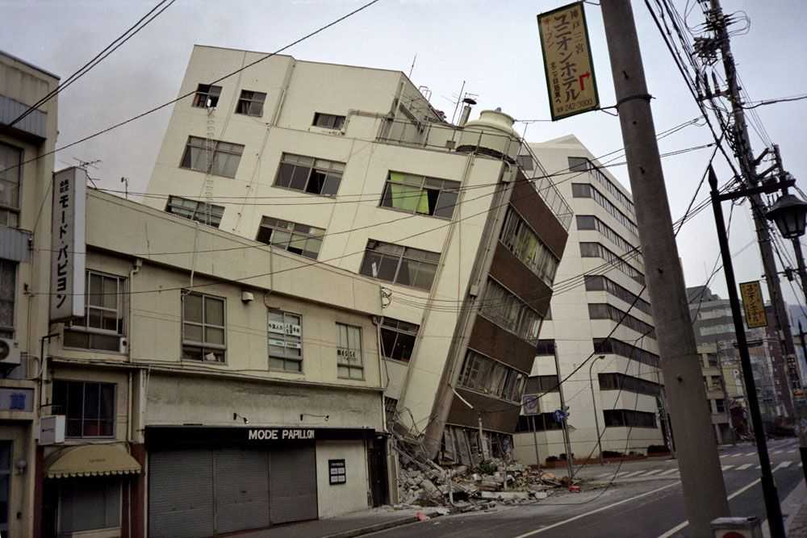
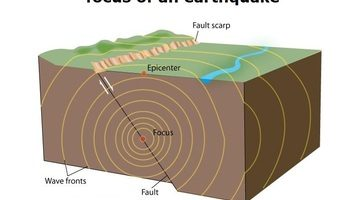
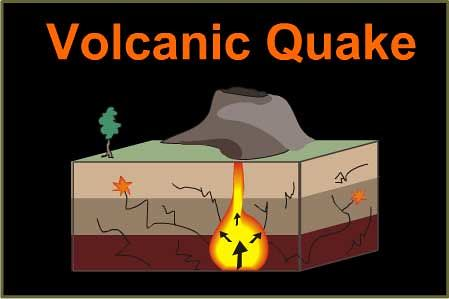
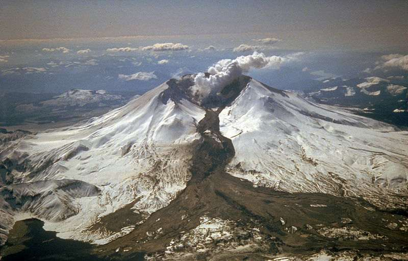
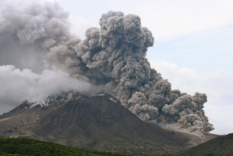
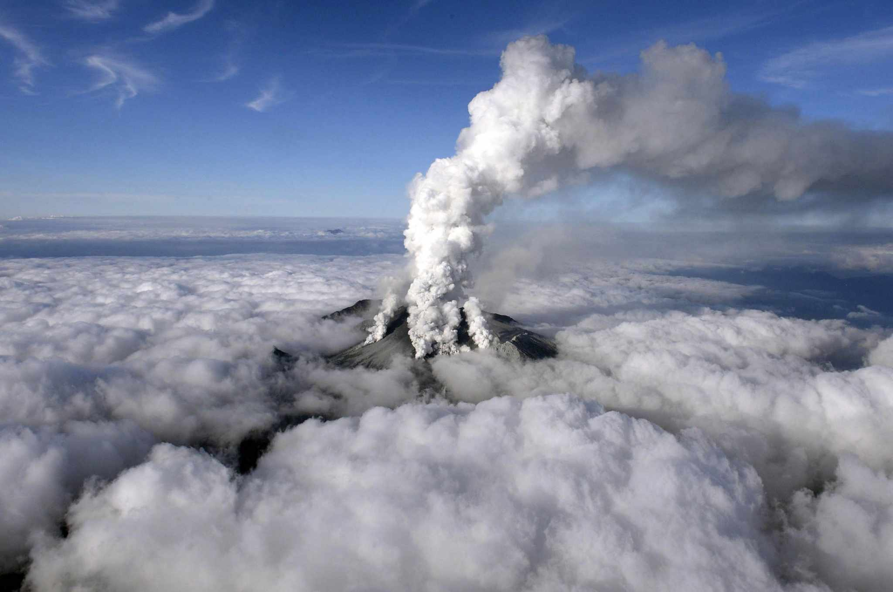
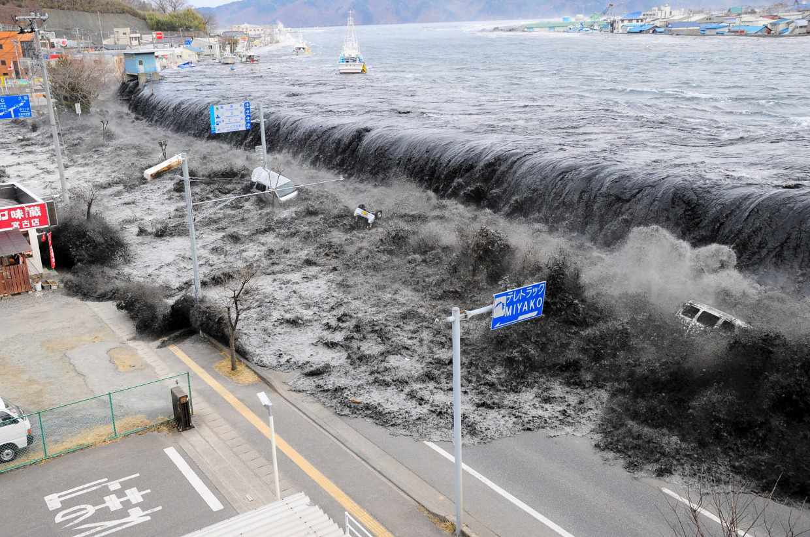
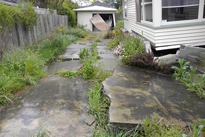
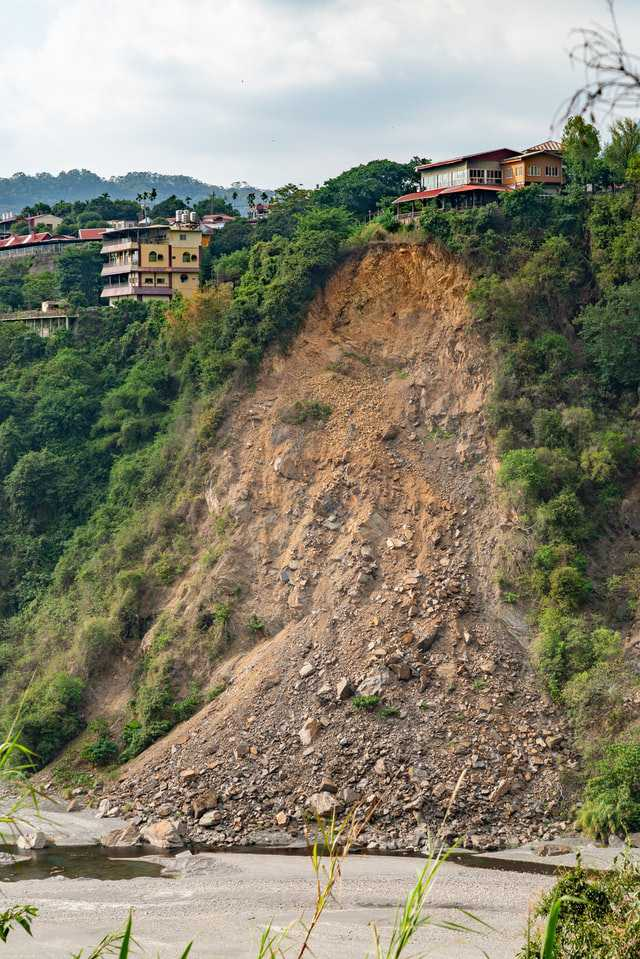
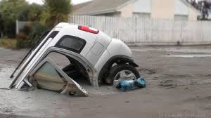

EARTH AND LIFE SCIENCE
GEOLOGIC PROCESSES & HAZARDS
NATURAL HAZARDS
EARTHQUAKE
Earthquake, any sudden shaking of the ground caused by the passage
of seismic waves through Earth's rocks

2 Major Sources
- Tectonic

-These are the most common type and occur when there is a sudden release of energy due to the movement
of tectonic plates. Example of it is the earthquake in japan that happened in 2011.
This magnitude 9.1 earthquake occurred when the Pacific Plate subducted beneath the North American Plate along the Japan Trench.
- Volcanic

-These happen in conjunction with volcanic activity. As magma rises and moves
through the Earth's crust, it can cause the surrounding rock to crack, leading to small or large tremors
- Now, these are the 4 hazards caused by a volcano.
- a. Lahar

- -A lahar is a fast moving mixture of water, rock, and debris that flows down the side of a volcano.
- b. Pyroclastic flow

- -This is a fast-moving current of hot gas, ash, and volcanic rock that flows down the side of a volcano during an eruption.
- c. Poisonous gases

- --During a volcanic eruption, toxic gases like sulfur dioxide, carbon dioxide, and hydrogen sulfide are released, which can cause respiratory problems in humans and animals.
- d. Ash fall

- - -Volcanic ash consists of tiny, sharp fragments of rock, minerals, and volcanic glass. When a volcano erupts, ash can be thrown into the atmosphere and fall over a wide area.
TSUNAMI
A tsunami is a series of waves in a water body caused by the
displacement of a large volume of water, generally in an ocean or a large lake

SURFACE FAULTING
Surface faulting is the rupture of the Earth's surface caused by
an earthquake. It occurs along the surface projection of faults and can involve different rocks and materials.

LANDSLIDE
Landslides, also known as landslips, or rockslides, are several forms of mass wasting that may include a wide range of ground movements, such as rockfalls, mudflows, shallow or deep-seated slope failures and debris flows.

LIQUEFACTION
liquefaction is a process that generates a liquid from a solid or a gas or that generates a non-liquid phase which behaves in accordance with fluid dynamics.It occurs both naturally and artificially.

PAGE 1
PAGE 3